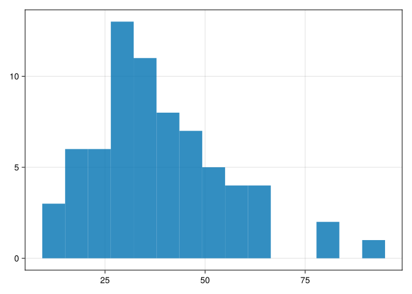
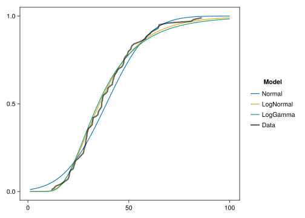
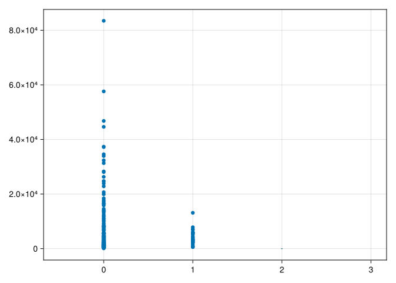
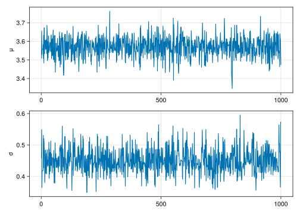
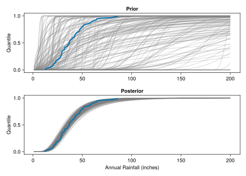
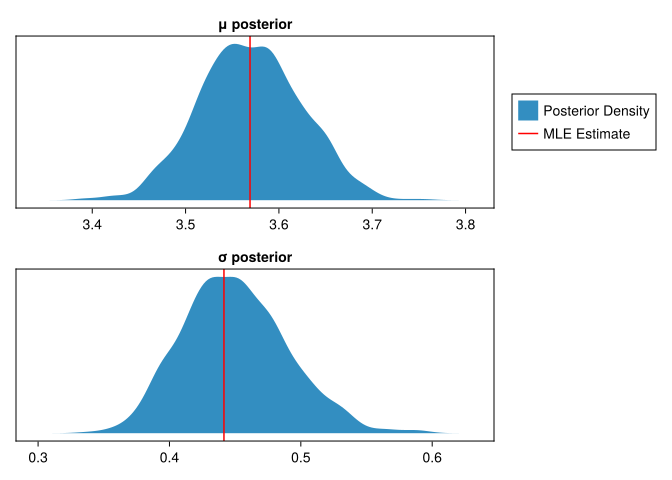

“My greatest concern was what to call [the amount of unpredictability in a random outcome]. I thought of calling it ‘information,’ but the word was overly used, so I decided to call it ‘uncertainty.’
When I discussed it with John von Neumann, he had a better idea. Von Neumann told me, ‘You should call it entropy, for two reasons. In the first place, your uncertainty function has been used in statistical mechanics under that name, so it already has a name. In the second place, and more important, no one really knows what entropy really is, so in a debate you will always have the advantage.’”- Claude Shannon (1971)
10.1 In This Chapter
A brief introduction to information theory and its foundational role in statistics. Entropy and probability distributions. Bayes’ rule and model selection comparison via likelihoods. A brief tour of modern Bayesian statistics.
10.2 Information Theory
Probability, statistics, machine learning, signal processing, and even physics have a foundational link in information theory which is the description and analysis of how much useful data is contained within something.
Let’s consider the following number that we encounter while reading a report which contains estimates of total amount of assets held. Unfortunately, for one reason or another one of the digits is not visible to you. Here’s what you can read, with the _ indicating that the digit is not visible:
32,000,_00
Now you probably already formed an opinion on what the missing number is, but let’s look at how we can quantify the analysis.
Given that we know the number was an estimate and the tendency of humans to like nice round numbers, our prior assumption for what the probability of the missing digit is may be something like the \(p(x_i)\) row of Table 10.1. We shall call the individual outcomes \(x_i\) and the overall set of probabilities \(\{x_0,x_1,...x_9\}\) is called \(X\).
The information content of an outcome, \(h(x)\) is measured in bits and defined as1:
So if we were to find out that the missing digit were indeed 0, we have gained less information relative to our expectation than if the missing digit were anything other than 0 .
We can characterize the entire distribution \(X\) via the entropy,\(H(X)\), of a probability set is the ensemble’s average information content:
The entropy \(H(X)\) of the presumed outcomes in Table 10.1 distribution of outcomes is \(0.722 \text{bits}\).
Table 10.1: Probability distribution of missing digit, knowing the human inclination to prefer round numbers when estimating.
\(x_i\)
0
1
2
3
4
5
6
7
8
9
\(p(x_i)\)
.91
.01
.01
.01
.01
.01
.01
.01
.01
.01
\(h(x_i)\)
0.136
6.644
6.644
6.644
6.644
6.644
6.644
6.644
6.644
6.644
Note that we have take a view on the probability distribution for the missing digit, and we’ll refer to this as the prior assumption (or just prior). This is an opinionated assumption, so what if we had another colleague who believed humans are completely rational and without bias for certain numbers. They would then be arguing for a prior assumed distribution consistent with Table 10.2.
With the uniform prior assumption, \(H(X) = 3.322 \text{bits}\) and \(h(x_i)\) is also uniform. We will not prove it here, but a uniform probability over a set of outcomes is the highest entropy distribution that can be assumed.
Table 10.2: Probability distribution of missing digit with uniform, maximal entropy for the assumed probability distribution.
\(x_i\)
0
1
2
3
4
5
6
7
8
9
\(p(x_i)\)
.10
.10
.10
.10
.10
.10
.10
.10
.10
.10
\(h(x_i)\)
3.322
3.322
3.322
3.322
3.322
3.322
3.322
3.322
3.322
3.322
The choice of prior assumption can significantly impact the interpretation and analysis of the missing information. If we have strong reasons to believe that the human bias prior is more appropriate given the context (e.g., knowing that the number is an estimate), then we would expect the missing digit to be ‘0’ with high probability. However, if we have no specific knowledge about the nature of the number and prefer to make a more conservative assumption, the uniform prior may be more suitable.
In real-world scenarios, the choice of prior assumptions often depends on domain knowledge, available data, and the specific problem at hand. It is important to carefully consider and justify the prior assumptions used in information-theoretic and statistical analyses.
10.2.1 Example: Classificaiton
In this example, we will determine the optimal splits for a decision tree2 based on the information gained at each node in the tree.
Our goal is to determine which attribute (employed or good_credit) to use as the first split in the decision tree. We will decide this by calculating the information gain, which is the difference in entropy between the prior node and the candidate node. In our case we start with H0 as calculated above for the output variable default and calculate the difference in entropy between it and the average entropy of the data if we split on that node. Information gain, \(IG(inputs, attributes)\), is:
\[
...
\]
Let’s first consider splitting the tree based on the employed status. We will calculate the entropy of each subset: with employment and without employment.
If we split the data based on being employed, we’d get two sub-datasets:
In the case of \(p_i = 0\) the value of \(h\) (the second term in the sum above) is taken to be \(0\), which is consistent with the \(\lim_{p\to0^+}p\log (p) = 0\).
0.0
And the corresponding candidate leaf is H_unemployed:
The information gain for splitting the tree using employment status is the difference between the root entropy and the entropy of the employment split:
IG_employment = H0 - H1_employment
0.35836512512191987
We could repeat the analysis to determine the information gain if we were to split the tree based on having good credit. However, given that there are only two attributes we can already conclude that employed is a better attribute to split the data on. This is because the information gain of IG_employment (0.358) is the majority of the overall entropy H0 (0.658). Entropy is always additive and you cannot have negative entropy, therefore no other other attribute could have greater information gain. This also matches our intuition when looking at Table 10.3 as the eye can spot a higher correlation between employed and default than good_credit and default.
The above example demonstrates how we can use information theory to create more optimal inferences on data.
10.2.2 Maxium Entropy Distributions
Why is information theory a useful concept? Many financial models are statistical in nature and concepts of randomness and entropy are foundational. For example, when trying to estimate parameter distributions or assume a distribution for a random process you can lean on information theory to use the most conservative choice: the distribution with the highest entropy given known constraints. These distributions are referred to as maximum entropy distributions. Some discussion of maximum entropy distributions in the context of risk assessment is available in an article by Duracz3. probability distributions and risk asses
Table 10.4: Maximum Entropy Distributions and the conditions under which they are applicable.
Constraint
Discrete Distribution
Continuous Distribution
Bounded range
Uniform (discrete)
Uniform (continuous)
Bounded range (0 to 1) with information about the mean or variance
Beta
Mean is finite, two possible values
Binomial
Mean is finite and positive
Geometric
Exponential
Mean is finite and range is > zero
Gamma
Mean and Variance is finite
Guassian (Normal)
Positive and equal mean and variance
Poisson
The distributions in Table 10.4 arise again and again in nature because of the second law of thermodynamics - nature likes to have constantly increasing entropy and therefore it should be no surprise (random) processes that maximize entropy pop up all over the place. As an example, let’s look at processes that behave like the Gaussian (Normal) distribution.
10.2.2.1 Processes that give rise to certain distributions
A random walk can be viewed as the cumulative impact of nudges pushing in opposite directions. This behavior culminates in the random, terminal position being able to be described by a Gaussian distribution. The center of a Gaussian distribution is “thick” because there are many more ways for the cumulative total nudges to mostly cancel out, while its increasingly rare to end up further and further from the starting point (mean). The distribution then spreads out as flat (randomly) as it can while still maintaining the constraint of having a given, finite variance. Any other continuous distribution that has the same mean and variance has lower entropy than the Guassian.
Table 10.5: Underlying processes create typical probability distributions. That there is significant overlap with the distributions in Section 10.2.2 is not a coincidence.
Process
Distribution of Data
Examples
Many additive pluses and minus that move an outcome in one dimension
Normal
Sum of many dice rolls, errors in measurements, sample means (Central Limit Theorem)
Many multiplicative pluses and minus that move an outcome in one dimension
Log-normal
Incomes, sizes of cities, stock prices
Waiting times between independent events occurring at a constant average rate
Exponential
Time between radioactive decay events, customer arrivals
Discrete trials each with the same probability of success, counting the number of successes
Binomial
Coin flips, defective items in a batch
Discrete trials each with the same probability of success, counting the number of trials until the first success
Geometric
Number of job applications until getting hired
Continuous trials each with the same probability of success, measuring the time until the first success
Exponential
Time until a component fails, time until a sales call results in a sale
Waiting time until the r-th event occurs in a Poisson process
Gamma
Time until the 3rd customer arrives, time until the 5th defect occurs
Probability Distributions
There are a lot of specialized distributions. There are lists of distributions you can find online or in references such as Leemis and McQueston (2008) which has a full-page network diagram of the relationships.
The information-theoretic and Bayesian perspective on it is to eschew memorization of a bunch of special cases and statistical tests. If you pull up the aforementioned diagram in Leemis and McQueston (2008), you can see just a handful of distributions that have the most central roles in the universe of distributions. Many distributions are simply transformations, limiting instances, or otherwise special cases of a more fundamental distribution. Instead of trying to memorize a bunch of probability distributions, it’s better to think critically about:
The fundamental processes that give rise to the randomness.
Tranformations of the data to make it nicer to work with, such as translations, scaling, or other non-destructive changes.
Then when you encounter a wacky dataset you don’t need to comb the depths of Wikipedia to find the perfect probability distributions.
10.2.2.2 Additive and Multiplicative Processes
Table 10.5 describes some examples, let us discuss further what it means to have a process that arises via an additive vs multiplicative effect4.
An outcome is additive if it’s the sum or difference of multiple independent processes. One of the simplest examples of this is rolling multiple dice and taking their sum. Or a random walk along the natural numbers wherein with equal probability you take a step left or right. The distribution of the position after \(n\) steps converges rapidly to a normal distribution. Another common one is when you are looking at the mean of a sample - since you are summing up the individual measurements you end up with a normal distribution (the Central Limit Theorem).
However, many processes are multiplicative in nature. For example the population density of cities is distributed in a log-normal fashion. If we think about the factors that contribute to choice of place to live, we can see how these factors multiply: an attractive city might make someone 10% more likely to move, a city with water features 15% more likely, high crime 30% less likely, etc. These forces combine in a multiplicative way in the generative process of deciding where to move.
Tip 10.1: Logarithms
The logarithm of a geometric process transforms the outcomes into “log-space”. The information is the same, but is often a more convenient form for the analysis. That is, if:
This is effectively the transformation that gives rise to the Normal versus Log-Normal distribution.
Bringing this back to the context of computational thinking:
First, we should think about how to transform data or modeling outcomes into a more convenient format. The log transform doesn’t eliminate any information but may map the information into a shape that is easier for an optimizer or Monte Carlo simulation to explore.
Second, per Chapter 5, floating point math is a lossy transformation of real numbers into a digital computer representation. Some information (in the literal Shannon information sense) is lost when computing and this tends to be worst with very small real numbers, such as those we encounter frequently in probabilities and likelihoods. Logarithms map very small numbers into negative numbers that don’t encounter the same degree of truncation error that tiny numbers do
Third, modern CPUs are generally much faster at adding or subtracting numbers than multiplying or dividing. Therefore working with the logarithm of processes may be computationally faster than the direct process itself.
10.3 Bayes’ Rule
The minister and statistician Thomas Bayes derived a relationship of conditional probabilities that we today know as Bayes’ Rule, commonly written as:
\[
P(H|D) = \frac{P(D|H) \times P(H)}{P(D)}
\]
The components of this are:
\(P(H∣D)\) is the conditional probability of event \(H\) occurring given that \(D\) is true.
\(P(D∣H)\) is the conditional probability of event \(D\) occurring given that \(H\) is true.
\(P(H)\) is the prior probability of event \(H\).
\(P(D)\) is the prior probability of event \(D\).
If we take the following:
\(D\) is the available data
\(H\) is our hypothesis
Then we can draw conclusions about the probability of a hypothesis being true given the observed data. When thought about this way, Bayes’ rule is often described as:
This is a very useful framework, which we’ll return to more completely in Section 10.4. First, let’s look at combining information theory and Bayes’ rule in an applied example.
10.3.1 Example: Model Selection via Likelihoods
Let’s say that we have competing hypothesis about a data generating process, such as: “given a set of data representing risk outcomes, what distribution best fits the data”?
We can compare these models using Bayes’ rules by observing the following: Suppose we have two models, \(H_1\) and \(H_2\), and we want to compare their likelihoods given the observed data, D. We can use Bayes’ rule to calculate the posterior probability of each model: $$ P(H_1|D) = (P(D|H_1) * P(H_1)) / P(D)
P(H_2|D) = (P(D|H_2) * P(H_2)) / P(D) $$
Where:
\(P(H_1|D)\) and \(P(H_2|D)\) are the posterior probabilities of models \(H_1\) and \(H_2\), respectively, given the data \(D\).
\(P(D|H_1)\) and \(P(D|H_2)\) are the likelihoods of the data \(D\) under models \(H_1\) and \(H_2\), respectively.
\(P(H_1)\) and \(P(H_2)\) are the prior probabilities of models \(H_1\) and \(H_2\), respectively.
\(P(D)\) is the marginal likelihood of the data, which serves as a normalizing constant.
To compare the likelihoods of the two models, we can calculate the ratio of their posterior probabilities, known as the Bayes factor, \(BF\):
\[
BF = \frac{P(H_1|D)}{P(H_2|D)}
\]
Substituting the expressions for the posterior probabilities from Bayes’ rule, we get:
The marginal likelihood \(P(D)\) cancels out since it appears in both the numerator and denominator. If we assume equal prior probabilities for the models, i.e., \(P(H_1)\) = \(P(H_2)\), then the Bayes factor simplifies to the likelihood ratio: \[
BF = \frac{P(D|H_1)}{P(D|H_2)}
\]
The interpretation of the Bayes factor is as follows:
If \(BF > 1\), the data favor \(H_1\) over \(H_2\).
If \(BF < 1\), the data favor \(H_2\) over \(H_1\).
If \(BF = 1\), the data do not provide evidence in favor of either model.
In practice, the likelihoods \(P(D|H_1)\) and \(P(D|H_2)\) are often calculated using the probability density or mass functions of the models, evaluated at the observed data points. The prior probabilities \(P(H_1)\) and \(P(H_2)\) can be assigned based on prior knowledge or assumptions about the models. By comparing the likelihoods of the models using the Bayes factor, we can quantify the relative support for each model given the observed data, while taking into account the prior probabilities of the models.
Another way of interpreting this is the more simplistic evaluation of which model has the higher likelihood given the data: this is simply a matter of comparing the magnitude of the likelihoods.
Null Hypthothesis Statistical Test
Null Hypothesis Statistical Tests (NHST) is the idea of trying to statistically support an alternative hypothesis over a null hypothesis. The support in favor of alternative versus the null is reported via some statistical power, such as the p-value (the probability that the test result is as, or more extreme, than the value computed). The idea is that there’s some objective way to push science towards greater truths and NHST was seen as a methodology that avoided the subjectivity of the Bayesian approach. However, while pure in concept, the NHST choices of both null hypothesis and model contain significant amounts of subjectivity! We might as well call the null hypothesis a prior and stop trying to disprove it absolutely. Instead: focus on model comparison, model structure, and posterior probabilities of the competiting theories.
Over 100 statistical tests have been developed in service of NHST Lewis (2013), but it’s widely viewed now that a focus on NHST has led to worse science due to a multitude of factors, such as:
“P-hacking” or trying to find subsets of data which can (often only by chance) support rejecting some null
Cognitive anchoring to the importance of a p-value of 0.05 or less - why choose that number versus 0.01 or 0.001 or 0.49?
Bias in research processes where one may stop data collection or experimentation after achieving a favorable test result
Inappropriate application of the myriad of statistical tests
Focus on p-values rather than effects that simply matter more or have greater effect
For example, which is of more interest to doctors? A study indicating a 1 in a billion chance of serious side effect (p-value 0.0001) or a study indicating a 1 in 3 chance (p-value 0.06)? Many journals would only publish the former study.
Difficulty to determine causal relationships.
There is subjectivity in the null hypothesis, data collection methodologies, study design, handling of missing data, choice of data not to include, which statistical tests to perform, and interpretation of relationships.
The authors of this book recommend against basic NHST and memorization of statistical tests in favor of principled Bayesian approaches. For the actuarial readers, NHST is analogous to traditional credibility methods (of which the authors also prefer more modern statistical approaches).
The example we’ll look at relates to the annual rainfall totals for a specific location in California5, which could be useful for insuring flood risk or determining the value of a catastrophe bond. Acknowloging that we are attempting to create a geocentric model6 instead of a scientifically accurate weather model, we narrow the problem to finding a probability distribution that matches the historical rainfall totals. Our goal is to recommend a model that best fits the data and justify that recommendation quantitatively. Before even looking at the data, Table 10.6 shows three competing models based on thinking about the real-world outcome we are trying to model. These three are chosen for the increasingly sophisticated thought process that might lead the modeler to recommend them - but which is supportable by the statistics?
Table 10.6: Three alternative hypothesis about the distribution of annual rainfall totals.
Hypothesis
Process
Possible Rationale
\(H_1\)
A Normal (Gaussian) distribution
The sum of independent rainstorms creates annual rainfall totals that are normally distributed
\(H_2\)
A LogNormal distribution
Since it’s normal-ish, but skewed and can’t be negative
\(H_3\)
A Gamma Distribution
Since rainfall totals would be the sum of exponentially-distributed independent rainfall events
Note
In the literature, \(H_3\) (the Gamma distribution) is known as the “Log-Pearson Type III distribution”. It’s actually recommended by the US Corps of Army Engineers as the recommended way to model rainfall totals.
When we do plot it, we can see some of the characteristics that align with our prior assumptions and knowledge about the system itself, such as: the data being constrained to positive values and a skew towards having some extreme weather years with lots of rainfall.
usingCairoMakiehist(rain)
┌ Warning: Found `resolution` in the theme when creating a `Scene`. The `resolution` keyword for `Scene`s and `Figure`s has been deprecated. Use `Figure(; size = ...` or `Scene(; size = ...)` instead, which better reflects that this is a unitless size and not a pixel resolution. The key could also come from `set_theme!` calls or related theming functions.
└ @ Makie ~/.julia/packages/Makie/VRavR/src/scenes.jl:220

Figure 10.1: Annual rainfall totals for a specific location in California.
We will show the likelihood of the three models after deriving the maximum likelihood (MLE), which is simply finding the parameters that maximize the calculated likelihood. In general, this can be accomplished by an optimization routine, but here we will just use the functions built into Distributions.jl:
┌ Warning: Found `resolution` in the theme when creating a `Scene`. The `resolution` keyword for `Scene`s and `Figure`s has been deprecated. Use `Figure(; size = ...` or `Scene(; size = ...)` instead, which better reflects that this is a unitless size and not a pixel resolution. The key could also come from `set_theme!` calls or related theming functions.
└ @ Makie ~/.julia/packages/Makie/VRavR/src/scenes.jl:220

Figure 10.2
Let’s look at the likelihoods. For the practical reasons described in Tip 10.1, we will compare the the log-likelihoods to maintain convention with what you’d likely see or deal with in practice. Taking the log of the likelihood does not change the ranking of the likelihoods.
The results indicate that the LogNormal and the Gamma model for rainfall distribution are very superior to the Normal model, consistent with the visual inspection of the quantiles in Figure 10.2. We reach that conclusion by noting how much more likely the latter two are, as the likelihoods of \(-42\) and \(-44\) is much greater than \(-296\)7.
We evaluated the likelihood at a single point estimate of the parameters, but a true posterior probability of the parameters of the distributions will be represented by a distribution rather than a point. Expanding the analysis to account for that point will be the focus of the remainder of this chapter.
10.4 Modern Bayesian Statistics
10.4.1 Background
Bayesian statistics is generally not taught in undergraduate statistics - Bayes’ rule is introduced, basic probability exercises are assigned, and then statistics moves on to a curriculum of regression and NHSTs. Why is the applied practice of statistics then gravitating towards Bayesian approaches? There are both philosophical and practical reasons why.
Philosophically, one of the main reasons why Bayesian thinking is appealing is its ability to provide a straightforward interpretation of statistical conclusions.
For example, when estimating an unknown quantity, a Bayesian probability interval can be directly understood as having a high probability of containing that quantity. In contrast, a Frequentist confidence interval is typically interpreted only in the context of a series of similar inferences that could be made in repeated practice. In recent years, there has been a growing emphasis on interval estimation rather than hypothesis testing in applied statistics. This shift has strengthened the Bayesian perspective since it is likely that many users of standard confidence intervals intuitively interpret them in a manner consistent with Bayesian thinking.
Another meaningful way to understand the contrast between Bayesian and Frequentist approaches is through the lens of decision theory, specifically how each view treats the concept of randomness. This perspective pertains to whether you regard the data being random or the parameters being random.
Frequentist statistics treats parameters as fixed and unknown, and the data as random — this is reflective of the view that data you collect is but one realization of an infinitely repeatable random process. Consequently, Frequentist procedures, like hypothesis testing or confidence intervals, are generally based on the idea of long-run frequency or repeatable sampling.
Conversely, Bayesian statistics turns this on its head by treating the data as fixed — after all, once you’ve collected your data, it’s no longer random but a fixed observed quantity. Parameters, which are unknown, are treated as random variables. The Bayesian approach then allows us to use probability to quantify our uncertainty about these parameters.
The Bayesian approach tends to align more closely with our intuitive way of reasoning about problems. Often, you are given specific data and you want to understand what that particular set of data tells you about the world. You’re likely less interested in what might happen if you had infinite data, but rather in drawing the best conclusions you can from the data you do have.
Practically, recent advances in computational power, algorithm development, and open-source libraries have enabled practitioners to adapt the Bayesian workflow.
Deriving the posterior distribution is analytically intractable so computational methods must be used. Advances in raw computing power only in the 1990’s made non-trivial Bayesian analysis possible, and recent advances in algorithms have made the computations more efficient. For example, one of the most popular algorithms, NUTS, was only published in the 2010’s.
Many problems require the use of compute clusters to manage runtime, but if there is any place to invest in understanding posterior probability distributions, it’s insurance companies trying to manage risk!
The availability of open-source libraries, such as Turing.jl, PyMC3, and Stan provide access to the core routines in an accessible interface. The exercise remains undoubtedly one that benefits from the computational thinking described in this book - understanding model complexity, model transformations and structure, data types and program organization, etc.
10.4.1.1 Advantages of the Bayesian Approach
The main advantages of this approach over traditional actuarial techniques are:
Focus on distributions rather than point estimates of the posterior’s mean or mode. We are often interested in the distribution of the parameters and a focus on a single parameter estimate will understate the risk distribution.
Model flexibility. A Bayesian model can be as simple as an ordinary linear regression, but as complex as modeling a full insurance mechanics.
Simpler mental model. Fundamentally, Bayes’ theorem could be distilled down to an approach where you count the ways that things could occur and update the probabilities accordingly.
Explicit Assumptions.: Enumerating the random variables in your model and explicitly parameterizing prior assumptions avoids ambiguity of the assumptions inside the statistical model.
10.4.1.2 Challenges with the Bayesian Approach
With the Bayesian approach, there are a handful of things that are challenging. Many of the listed items are not unique to the Bayesian approach, but there are different facets of the issues that arise.
Model Construction. One must be thoughtful about the model and how variables interact. However, with the flexibility of modeling, you can apply (actuarial) science to makes better models!
Model Diagnostics. Instead of R^2 values, there are unique diagnostics that one must monitor to ensure that the posterior sampling worked as intended.
Model Complexity and Size of Data. The sampling algorithms are computationally intensive - as the amount of data grows and model complexity grows, the runtime demands cluster computing.
Model Representation. The statistical derivation of the posterior can only reflect the complexity of the world as defined by your model. A Bayesian model won’t automatically infer all possible real-world relationships and constraints.
Subjectivity of the Priors?
There are two ways one might react to subjectivity in a Bayesian context: It’s a feature that should be embraced or it’s a flaw that should be avoided.
10.4.1.3 Subjectivity as a Feature
A Bayesian approach to defining a statistical model is an approach that allows for explicitly incorporating professional judgment. Encoding assumptions into a Bayesian model forces the actuary to be explicit about otherwise fuzzy predilections. The explicit assumption is also more amenable to productive debate about its merits and biases than an implicit judgmental override.
10.4.1.4 Subjectivity as a Flaw
Subjectivity is inherent in all useful statistical methods. Subjectivity in traditional approaches include how the data was collected, which hypothesis to test, what significant levels to use, and assumptions about the data-generating processes.
In fact, the “objective” approach to null hypothesis testing is so prone to abuse and misinterpretation that in 2016, the American Statistical Association issued a statement intended to steer statistical analysis into a “post p<0.05 era.” That “p<0.05” approach is embedded in most traditional approaches to actuarial credibility8 and therefore should be similarly reconsidered.
10.4.2 Implications for Financial Modeling
Like Bayes’ Formula itself, another aspect of actuarial literature that is taught but often glossed over in practice is the difference between process risk (volatility), parameter risk, and model formulation risk. Often when performing analysis that relies on stochastic result, in practice only process/volatility risk is assessed.
Bayesian statistics provides the tools to help actuaries address parameter risk and model formulation. The posterior distribution of parameters derived is consistent with the observed data and modeled relationships. This posterior distribution of parameters can then be run as an additional dimension to the risk analysis.
Additionally, best practices include skepticism of the model construction itself, and testing different formulation of the modeled relationships and variable combinations to identify models which are best fit for purpose. Tools such as Information Criterion, posterior predictive checks, Bayes factors, and other statistical diagnostics can inform the actuary about trade-offs between different choices of model.
Bayesian Versus Machine Learning
Machine learning (ML) is fully compatible with Bayesian analysis - one can derive posterior distributions for the ML parameters like any other statistical model and the combination of approaches may be fruitful in practice.
However, to the extent that actuaries have leaned on ML approaches due to the shortcomings of traditional actuarial approaches, Bayesian modeling may provide an attractive alternative without resorting to notoriously finicky and difficult-to-explain ML models. The Bayesian framework provides an explainable model and offers several analytic extensions beyond the scope of this introductory chapter:
Causal Modeling: Identifying not just correlated relationships, but causal ones, in contexts where a traditional experiment is unavailable.
Bayes Action: Optimizing a parameter for, e.g., a CTE95 level instead of a parameter mean.
Information Criterion: Principled techniques to compare model fit and complexity.
Missing data: Mechanisms to handle the different kinds of missing data.
Model averaging: Posteriors can be combined from different models to synthesize different approaches.
10.4.3 Basics of Bayesian Modeling
A Bayesian statistical model has four main components to focus on:
Prior encoding assumptions about the random variables related to the problem at hand, before conditioning on the data.
A Model that defines how the random variables give rise to the observed outcome.
Data that we use to update our prior assumptions.
Posterior distributions of our random variables, conditioned on the observed data and our model
Having defined the first two components and collected our data, the workflow involves computationally sampling the posterior distribution, often using a technique called Markov Chain Monte-Carlo (MCMC). The result is a series of values that are sampled statistically from the posterior distribution.
10.4.4 Markov-Chain Monte Carlo
While computing the posterior distribution for most model parameters is analytically intractable, we can probabilistically sample from the posterior distribution and achieve an approximation of the posterior distribution. MCMC samplers, as they are called, do this by moving through the parameter space and travel to different points in proportion to the posterior probability. It is a Markov-Chain because the probability of the next point’s location is influenced by the prior sampling point’s location.
Here is a simple example demonstrated with one of the oldest MCMC algorithm, called Metropolis-Hastings. The general idea is this:
Start at an arbitrary point and make that the current_state.
Propose a new point which is the current_state plus some movement that comes from a random distribution, proposal_dist.
Calculate the likelihood ratio of the proposed versus current point (acceptance_ratio below).
Draw a random number - if that random number is less than the acceptance_ratio, then move to that new point. Otherwise do not move.
Repeat steps 2-4 until the distribution of points converges to a stable posterior distribution.
Here is what a complete example looks like. We will try to find the posterior of an arbitrary 2D density function. Picking the product of an Exponential and Beta distribution looks like this:
target_dist =product_distribution(Exponential(1.),Beta(2.,15.))# plot the target_distirubutionxs =LinRange(-0.5, 3, 400)ys =LinRange(0, 3, 400)zs = [pdf(target_dist,[x,y]) for x in xs, y in ys]contour(xs, ys, zs)
┌ Warning: Found `resolution` in the theme when creating a `Scene`. The `resolution` keyword for `Scene`s and `Figure`s has been deprecated. Use `Figure(; size = ...` or `Scene(; size = ...)` instead, which better reflects that this is a unitless size and not a pixel resolution. The key could also come from `set_theme!` calls or related theming functions.
└ @ Makie ~/.julia/packages/Makie/VRavR/src/scenes.jl:220

The target probability density which we will attempt to infer via MCMC.
We will next define a probability distribution for the random step that we take from the current_point. We choose a 2D Guassian for this. The proposal_std controls how big of a movement is taken at each step.
# Define the proposal distribution (2D Gaussian with diagonal covariance)proposal_std =0.025proposal_dist =MvNormal(proposal_std *ones(2))
We next define how many steps we want the chain to sample for, and implement the algorithm’s main loop containing the logic described above. The resulting chain contains a list of points that the algorithm has moved along during the sampling process. Note that there is a burn-in parameter. This is because we want the chain to be effectively independent of both (1) the starting point for the sample, and (2) so that different chains are effectively independent.
# MCMC parametersnum_samples =10000burn_in =500# Initialize the Markov chaincurrent_state = [0.0, 0.0]chain =zeros(num_samples, 2)# MCMC sampling loopfor i in1:num_samples# Generate a new proposal proposal =rand(proposal_dist) + current_state# Calculate the acceptance ratio current_prob =pdf(target_dist, current_state) proposal_prob =pdf(target_dist, proposal) acceptance_ratio = proposal_prob / current_prob# Accept or reject the proposalifrand() < acceptance_ratio current_state = proposalend# Store the current state as a sample chain[i, :] = current_stateendchain
After having performed the sampling, we can now visualize the chain versus the target_distribution. A few things to note:
The red line indicates the “warm up” or “burn-in” phase and we do not consider that as part of the sampled chain because those values are too correlated with the arbitrary starting point.
The blue line indicates the path traveled by the Metropolis-Hasting algorithm. Long asides into low-probability regions are possible, but in general the path will traverse areas in proportion to the probability of interest.
# Plot the chainlet f =Figure() ax =Axis(f[1, 1])contour!(ax,xs, ys, zs)lines!(ax,Point2f.(eachrow(chain[1:burn_in,:])),color=(:red, 0.8))1for i in burn_in:num_samples ps =Point2f.(eachrow(chain[i-1:i,:]))lines!(ax,ps,color=(:blue,0.2))end fend
1
Iterate through pairs of points to plot as separate line segments so that the transparent blue line visually stack and the higher density near the center is apparent.
┌ Warning: Found `resolution` in the theme when creating a `Scene`. The `resolution` keyword for `Scene`s and `Figure`s has been deprecated. Use `Figure(; size = ...` or `Scene(; size = ...)` instead, which better reflects that this is a unitless size and not a pixel resolution. The key could also come from `set_theme!` calls or related theming functions.
└ @ Makie ~/.julia/packages/Makie/VRavR/src/scenes.jl:220
Figure 10.3: The blue lines of the MCMC chain explore the posterior density of interest (after discarding the burn-in samples in red). Becuause of the sharp boundary at \(x=0\) right next to the highest density region, this will sample somewhat ineficiently since when the current state is near \(x=0\), it becomes increasingly likely that any proposal that moves further to the left will be rejected.
10.4.5 MCMC Algorithms
The Metropolis-Hasting algorithm is simple, but somewhat inefficient. Some challenges with MCMC sampling are both mathematical and computational:
Often times the algorithm will back-track (take a “U-Turn”), wasting steps in regions already explored.
The algorithm can have a very high rate of rejecting proposals if the proposal mechanism generates steps that would move the current state into a low-probability regions.
The choice of proposal distribution and parameters can greatly influence the speed of convergence. Too large of movement and key regions can be entirely skipped over, while small movements can take much longer than necessary to explore the space.
As the number of parameters grows, the dimensionality of the parameter space to explore also grows making posterior exploration much harder.
The shape of the posterior space can be more ore less difficult to explore. Complex models may have regions of density that are not nicely “round” - regions may be curved, donut shaped, or disjointed.
The problems above mean that MCMC sampling is very computationally expensive for more complex examples. Compared with Metropolis-Hastings, modern algorithms (such as the No-U-Turn (NUTS)) algorithm explore the posterior distribution more efficiently by avoiding back-tracking to already explored regions and dynamically adjusting the proposals to adaptively fit the posterior. Many of them take direct influence from particle physics, with the algorithm keeping track of the energy of the current state as it explores the posterior space.
Algortihms have only brought so much relief: much falls back onto the modeler to design models that are computationally efficient, transformed to eliminate oddly-shaped density regions, or find the right simplifications to the analysis in order to make the problem tractable.
Note
What does it mean to transform the parameter space?
An example will be shown in Chapter 23 where we want to ensure that a binomial variable is constrained to the region \([0,1]\) but the underlying factors are allowed to vary across the entire real numbers. We use a logit (or inverse logit, a.k.a. logistic) to transform the parameters to the required probability range for the binomial outcome.
Another common transform is “Normalizing” the data to center the data around zero and to scale the outcomes such that the sample standard deviation is equal to one.
10.4.6 Rainfall Example (Continued)
We will construct a Bayesian model using the Turing.jl library, and fit the parameters of one of the competing models in order to demonstrate an MCMC analysis workflow and essential concepts.
The first thing that we will do is use Turing’s @model macro to define a model. This has a few components:
The “model” is really just a Julia function that takes in data and relates the data to the statistical outcomes modeled.
The ~ is the syntax to either relate a parameter to a prior assumptions.
A loop (or broadcasted .~) that ties specific data observations to the random process.
Think of the @model block really as a model constructor. When you pass data to the model, then you get an instantiated Model type9.
usingTuring1@modelfunctionrainLogNormal(logdata)# Prior Assumptions for the (Log) Normal Parameters2 μ ~Normal(4,1)3 σ ~Exponential(0.5)# Link observations to the random processfor i in1:length(logdata) logdata[i] ~Normal(μ, σ)endendm =rainLogNormal(log.(rain));
1
Defining the model uses the @model macro from Turing.
2
We know that there will be positive rainfall and 96% of mean annual rainfall will be between \(exp(2)\) and \(exp(6)\), or 7 and 403 inches.
3
In a LogNormal model, 0.5 deviations covers a lot of variation in outcomes.
In the example above, we used “weakly informative” priors. We constrained the prior probability to plausible ranges, knowing enough about the system of study (rainfall) that it would be completely implausible for there to be a Uniform(0,Inf) distribution of mean log-rainfall total. We admit a level of subjectivity when we encode into the model some limitations on what we would believe to be true. Admittedly, we haven’t confirmed with a meteorologist that \(exp(20)\) (485 million) inches of rain per year is impossible. But such is the beauty of the transparency of Bayesian analysis that the prior assumption is right there! Front and center!
“Strongly informative” priors would be something where we want to encode a stronger assumption about the plausible range of outcomes, such as if we knew enough about the problem domain that we could tell given the location of the rainfall, we’d expect 95% of the rainfall to be between, say, 10 and 30 inches per year.
“Uninformative” priors use only maximum entropy or uniform priors to avoid encoding bias into the model.
10.4.6.2 Sampling
Analysis should begin by evaluating the prior assumptions for reasonability and coverage over possible outcomes of the process we are trying to model. The top plot in Figure 10.7 shows the modeled rainfall outcomes taking on a wide range of possible outcomes. If we had more knowledge of the system we could enforce a stronger (narrower) prior assumption to constrain the model to a smaller set of values.
The object returned is an MCMCChains structure containing the samples as well as diagnostic information. Summary information gets printed below.
Figure 10.4: Model output for the sampled prior. This isn’t running an MCMC algorithm, it’s simply taking draws from the defined prior assumptions.
We now sample the posterior by using the No-U-Turns (NUTS) algorithm and drawing 1000 samples (not including the warm-up phase). This is the primary result we will analyze further.
Figure 10.5: Model output for the sampled posterior.
10.4.6.3 Diagnostics
Before analyzing the result itself, we should check a few things to ensure the model and sampler were well behaved. MCMC techniques are fundamentally stochastic and randomness can cause an errant sampling path. Or a model may be mis-specified such that the parameter space to explore is incompatible with the current algorithm (or any known so far).
A few things we can check:
First, the ess or effective sample size which adjusts the number of samples for the degree of autocorrelation in the chain. Ideally, we would be able to draw independent samples from the posterior but due to the Markov-Chain approach the samples can have autocorrelation between neighboring samples. Therefore we collect less information about the posterior in the presence of positive autocorrelation. An ess greater than our sample indicates that there was less (negative) autocorrelation than we would have expected for the chain. An ess much less than the number of samples indicates that the chain isn’t sampling very efficiently but, aside from needing to run more samples, isn’t necessarily a problem.
Second, the rhat (\(\hat{R}\)) is the Gelman-Rubin convergence diagnostic and it’s value should be very close to 1.0 for a chain that has converged properly. Even a value of 1.01 may indicate an issue and quickly gets worse for higher values.
rhat(chain_posterior)
R-hat
parameters rhat Symbol Float64
μ 0.9997
σ 1.0008
Next, we can look at the “trace” plots for the parameters being sampled (Figure 10.6). These are sometimes called “hairy caterpillar” plots because in a healthy chain sample, we should see a series without autocorrelation and that the values bounce around randomly between individual samples.
let f =Figure() ax1 =Axis(f[1,1],ylabel="μ")lines!(ax1,vec(get(chain_posterior,:μ).μ.data)) ax2 =Axis(f[2,1],ylabel="σ")lines!(ax2,vec(get(chain_posterior,:σ).σ.data)) fend
┌ Warning: Found `resolution` in the theme when creating a `Scene`. The `resolution` keyword for `Scene`s and `Figure`s has been deprecated. Use `Figure(; size = ...` or `Scene(; size = ...)` instead, which better reflects that this is a unitless size and not a pixel resolution. The key could also come from `set_theme!` calls or related theming functions.
└ @ Makie ~/.julia/packages/Makie/VRavR/src/scenes.jl:220

Figure 10.6: The trace plots indicate low autocorrelation which is desirable for an MCMC sample.
The ess, rhat, and trace plots all look good for our sampled chain so we can next we will analyze the results proper.
10.4.6.4 Analysis
Let’s see how it looks compared to the data first. Figure 10.7 shows 200 samples from the prior and posterior. The prior (top) shows how wide the range of possible rainfall outcomes could be using our weakly informative prior assumptions. The bottom shows that after having learned from the data, the posterior probability of rainfall has narrowed considerably.
functionchn_cdf!(axis,chain,rain) n =200 s =sample(chain, n) vals =get(s, [:μ, :σ]) ds =Normal.(vals.μ, vals.σ) # ,get(s,:σ)[i]) rg =1:200for (i, d) inenumerate(ds)lines!(axis, rg,cdf.(d,log.(rg)),color=(:gray,0.3))end# plot the actual data percentiles=0.01:0.01:0.99lines!(axis,quantile.(Ref(rain),percentiles),percentiles,linewidth=3)endlet f =Figure() ax1 =Axis(f[1,1],title="Prior", xgridvisible=false, ygridvisible=false,ylabel="Quantile")chn_cdf!(ax1,chain_prior,rain) ax2 =Axis(f[2,1],title="Posterior", xgridvisible=false, ygridvisible=false,xlabel="Annual Rainfall (inches)",ylabel="Quantile")chn_cdf!(ax2,chain_posterior,rain)linkxaxes!(ax1, ax2) fend
┌ Warning: Found `resolution` in the theme when creating a `Scene`. The `resolution` keyword for `Scene`s and `Figure`s has been deprecated. Use `Figure(; size = ...` or `Scene(; size = ...)` instead, which better reflects that this is a unitless size and not a pixel resolution. The key could also come from `set_theme!` calls or related theming functions.
└ @ Makie ~/.julia/packages/Makie/VRavR/src/scenes.jl:220

Figure 10.7: The fitted posterior model (bottom) has good coverage of the observed data (shown in blue).
Comparing to the maximum likelihood analysis from before by plotting the MLE point estimate onto the marginal densities in Figure 10.8. The peak of the the posterior is referred to as the maximum a posteriori (MAP) and would be the point estimate proposed by this Bayesian analysis. However, the Bayesian way of thinking about distributions of outcomes rather than point estimates is one of the main aspects we encourage for financial modelers. Using the posterior distribution of the parameters, we can assess parameter uncertainty directly instead of ignoring it as we tend to do with point estimates.
let# get the parameters from the earlier MLE approach p =params(ln) f =Figure()# plot μ posterior ax1 =Axis(f[1,1],title="μ posterior",xgridvisible=false)hideydecorations!(ax1) d =density!(ax1,vec(get(chain_posterior,:μ).μ.data)) l =vlines!(ax1,[p[1]],color=:red)# plot σ posterior ax2 =Axis(f[2,1],title="σ posterior", xgridvisible=false)hideydecorations!(ax2)density!(ax2,vec(get(chain_posterior,:σ).σ.data))vlines!(ax2,[p[2]],color=:red)Legend(f[1,2],[d,l],["Posterior Density", "MLE Estimate"]) fend
┌ Warning: Found `resolution` in the theme when creating a `Scene`. The `resolution` keyword for `Scene`s and `Figure`s has been deprecated. Use `Figure(; size = ...` or `Scene(; size = ...)` instead, which better reflects that this is a unitless size and not a pixel resolution. The key could also come from `set_theme!` calls or related theming functions.
└ @ Makie ~/.julia/packages/Makie/VRavR/src/scenes.jl:220

Figure 10.8: The MLE point estimate does not necessarily align with the posterior densities.
10.4.6.5 Understanding Model Limitations
We have built and assessed a simple statistical model that could be used in the estimation of risk for a particular location. Nowhere in our model did we define a mechanism to capture a more sophisticated view of the world. There is no parameter for changes over time due to climate change, or inter-annual seasonality for El Niño or La Niña cycles, or any of a multitude of other real-world factors that can influence the forecasting. All we’ve defined is that there is a LogNormal process generating rainfall in a particular location. This may or may not be sufficient to capture the dynamics of the problem at hand.
Part of the benefits of the Bayesian approach is that it allows us to extend the statistical model to be arbitrarily complex in order to capture our intended dynamics. We are limited by the availability of data, computational power and time, and our own expertise in the modeling. Regardless of the complexity of the model, the same fundamental techniques and idea apply in the Bayesian approach.
10.4.6.6 Continuing the Analysis
Like any good model, you can often continue the analysis in any number of directions, such as: collecting more data, evaluating different models, creating different visualizations, making predictions about future events, creating a multi-level model that predicts rainfall for multiple related locations simultaneously, among many other
Earlier we discussed model comparison. To compute a real Bayes Factor in comparing the different models, we would take the average likelihood across the posterior samples instead of just comparing the maximum likelihood points as we did earlier. There are more sophisticated tools for estimating out of sample performance of the model, or measures that evaluate a model for over-fitting by penalizing the diagnostic statistic for the model having too many free parameters. See LOO (leave-one-out) cross-validation and various “information criteria” in the resources listed in Section 10.4.8.
10.4.7 Conclusion
This chapter has attempted to make accessible the foundations of statistical inference and the modern tools and approaches available. Underlying this approach to thinking about statistical problems are informational theoretic and mathematical concepts that can be challenging to learn when traditional finance and actuarial curricula is not centered on the necessary computational foundations that are associated with modern statistical analysis. Further, the approach of treating estimation not as an exercise in determining a “best estimate” but instead as a range of outcomes will enhance financial analysis and quantification of risks.
10.4.8 Further Reading
Bayesian approaches to statistical problems are rapidly changing the professional statistical field. To the extent that the actuarial profession incorporates statistical procedures, financial professionals should consider adopting the same practices. The benefits of this are a better understanding of the distribution of risk and return, results that are more interpretable and explainable, and techniques that can be applied to a wider range of problems. The combination of these things would serve to enhance best practices related to understanding and communicating about financial quantities.
Leemis, Lawrence M, and Jacquelyn T McQueston. 2008. “Univariate Distribution Relationships.”The American Statistician 62 (1): 45–53. https://doi.org/10.1198/000313008x270448.
Lewis, N D. 2013. 100 Statistical Tests. Createspace.
Log base two turns out to be the most natural representation of information content as it mimics the fundamental 0 or 1 value bit. A more complete introduction is available in “Information Theory, Inference, and Learning Algorithms” by David MacKay.↩︎
A decision tree is a classification algorithm which attempts to optimally classify an output based on if/else type branches on the input variables.↩︎
Mulitiplicative process are often referred to as “geometric”, as in “geometric Brownian motion” or “geometric mean”. Additive processes are sometimes referred to as “arithmetic”. This root of this confusing terminology appears to be due to the fact that series involving repeated multiplication were solved via geometric (triangles, angles, etc.) methods while those using sums and differences were solved via arithmetic.↩︎
The values are negative because we are taking the logarithm of a number less than \(1\). The likelihoods are less than \(1\) because the likelihood is the joint (multiplicative) probability of observing each of the individual outcomes.↩︎
Note that the approach discussed here is much more encompassing than the Bühlmann-Straub Bayesian approach described in the actuarial literature.↩︎
Specifically: a DynamicPPL.Model type (PPL = Probabilistic Programming Language).↩︎